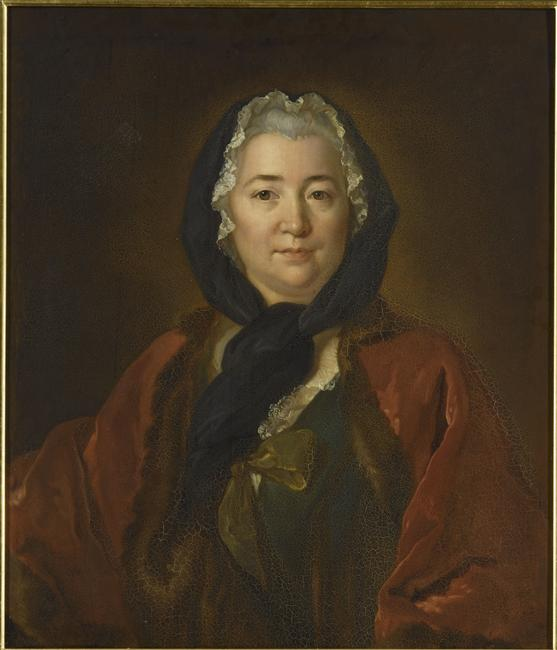

Françoise de Graffigny
Portrait présumé par Rumilly d'après Tocqué — Versailles · domaine public
1695–1758. Femme de lettres lorraine, autrice des Lettres d'une Péruvienne (1747), œuvre intégrale de notre première séquence : « Un nouvel univers s'est offert à mes yeux ».